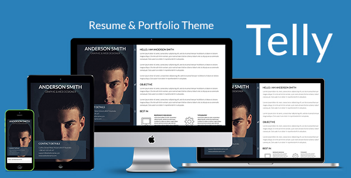
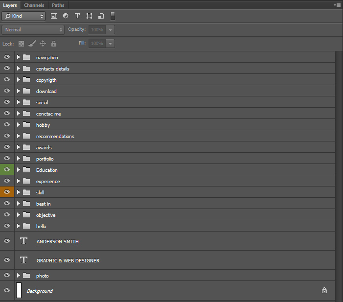

Telly is professional HTML5 Resume and Portfolio template. It's build with functionality in mind that means you will find all content blocks commonly used in CV and Resumes.
This one-page template has brand new navigation and built with modern technologies like HTML5, CSS3, jQuery, Bootstrap 3. It is fully responsive with clean modern design.
Telly features include:
- Fullscreen one-page design
- Two layout options
- Brand new navigation
- Trendy animations
- Interactive portfolio filtering
- Mobile friendly navigation
- And many more
| File Path | Description |
|---|---|
| Main | Root folder |
| Main/PSD |
PSD Folder includes .psd file, which is: telly.psd - Layered psd file of Telly Template with all typography and components |
| Main/Telly | This folder includes all HTML, CSS, Javascript, Fonts and Image files of the template. |
| Main/Telly/version1.html | This is Template page with profile image on the left side. |
| Main/Telly/version2.html | This is Template page with profile image on the right side. |
| Main/Telly/css | This folder includes all .css files. To change the appearance of the template you need to modify file: theme-styles.css. |
| Main/Telly/js | This folder includes all .js files (theme scripts, libraries and plugins). To edit Javascript functionality of the template you need to modify scripts.js file. |
| Main/Telly/img | This folder includes all graphic assets of the template. When you need to change images, icons, backgrounds, etc..this is the place to do it. |
| Main/Telly/fonts | This folder includes IcoMoon and Flaticon generated Fonts. They are iconic fonts, that gives you customizable vector icons. For more information on how it works, please visit: IcoMoon Official Website and Flaticon Official Website |
HTML Code devided into sections that are represented by <section> tag. Each section is a block of content. Thus, if you want to change content of Objective block you do it in section with id="objective". Document is properly commented so you won't get lost. Please note the id tags of each section correlate with anchors in the side menu to allow scrolling navigation.
<!--Preloader-->
<div id="preloader">
<!--Preloader Code Goes Here-->
</div>
<!--Container-->
<div class="wrapper">
<!--Outer wrapper that holds sidebar with picture and main content-->
<!--Sidebar-->
<aside class="sidebar-wrap-left">
<!--Sidebar Code Goes Here-->
</aside>
<!--Content-->
<div class="content-right">
<!--Introduction-->
<section class="intro" id="intro">
<!--Content Goes Here-->
</section>
<!--Objective-->
<section id="objective">
<!--Content Goes Here-->
</section>
<!--Strength (Best In)-->
<section id="strength">
<!--Content Goes Here-->
</section>
<!--Skills-->
<section class="full-width skills" id="skills">
<!--Content Goes Here-->
</section>
<!--Experience-->
<section class="experience-block" id="experience">
<!--Content Goes Here-->
</section>
<!--Education-->
<section class="education full-width color-bg" id="education"><!--color-bg class means color background-->
<!--Content Goes Here-->
</section>
<!--Portfolio-->
<section class="portfolio full-width" id="portfolio">
<!--Content Goes Here-->
</section>
<!--Awards-->
<section class="awards color-bg full-width" id="awards">
<!--Content Goes Here-->
</section>
<!--Recommendations-->
<section class="recommend full-width" id="recommend">
<!--Content Goes Here-->
</section>
<!--Hobby-->
<section class="hobby color-bg full-width" id="hobby">
<!--Content Goes Here-->
</section>
<!--Contact Form-->
<section id="contact-form">
<!--Content Goes Here-->
</section>
<!--Social-->
<section class="full-width" id="social">
<!--Content Goes Here-->
</section>
<!--Files-->
<section class="files full-width" id="files">
<!--Content Goes Here-->
</section>
<!--Footer-->
<footer class="group">
<!--Content Goes Here-->
</footer>
</div><!--Content Close-->
</div><!--Container Close-->
Each link of the navigation is placed inside section tag of relevant content block
To edit it you need to go to appropriate section.
For example, you want to change icon of objective link, look at the code below (it's highlited in bold):
<!--Objective-->
<section id="objective">
<a class="navi-link scroll-top-40" href="#objective" id="2"><i class="icon-target"></i></a>
.............................................
</section>
Pay attention to the "id" of the link. It represents the order in which content blocks appear on the page. If you re-order them you need to change id's respectively.
To change profile image in the Sidebar you need to find and replace Telly / img / profile-pic.jpg with your own. Ideal width of the image is 970-980px.
Pay attention: the Sidebar has background color aaplied to it. This color is the same with the color from bottommost part of the image. Such technique creates the illusion that image is 100% height. When you change profile picture make sure you adjust Sidebar background color as well (line #142 in theme-styles.css).
.sidebar {
height: auto;
position: fixed;
width: 100%;
min-height: 100%;
background-color: #12121a;
z-index: 0;
}
To change images, texts and other content in chosen content block you need to find section with appropriate "id" tag.
For example, to edit content of the "Best In" block go to section with id="strength". If you need simply replace the images but retain content structure as it is you can do that in folder: Telly / img / strength.
In this template we used 2 Icon fonts: IcoMoon (TellyFont) and Flaticon used for social networks only. They are Font icons which means you can easily change them by replacing icon-iconName class. in case of IcoMoon or flaticon-socialIconName class. if you used FontAwsome icons.
There are two main CSS files that affect this template: bootstrap.min.css; theme-styles.css.
bootstrap.min.css - is Bootstrap 3.1.1 .css file which enables responsiveness and other features. Telly template based on Bootstrap 3.1.1 grid system. To learn more about Bootstrap 3.1 please visit http://getbootstrap.com/
theme-styles.css - is the stylesheet with all styles relating to this template. So whatever you need to change, change it there.
In you want to change headings color (shade of blue by default) you can easily do this by editing .color-heading rules. It's line #96 in theme-styles.css
In you want to change baground color of some content blocks (like Education) simply edit .color-bg rules. It's line #250 in theme-styles.css
In the "Body" section of the theme-styles.css file (line #32) you can globally change font-family and font-color of the template.
/*Body*/
body {
font-family: 'Lato', Arial, Helvetica, sans-serif;
background-color: #ffffff;
font-weight: normal;
color: #000000;
line-height: 1;
-webkit-font-smoothing: antialiased;
margin: 0;
padding: 0;
}
To change typography styles you need to go to "Typography" section of the theme-styles.css file. It's line #43. Here you can globally change font color, font size, headings, paragraphs, list styles, etc..
/*Typography*/
h1 {
font-size: 4.4em;
text-transform: uppercase;
text-align: center;
font-weight: bold;
}
h2 {
font-size: 2.2em;
text-transform: uppercase;
font-weight: normal;
-webkit-margin-before: 0em;
-webkit-margin-after: 0em;
margin-bottom: 20px;
}
.............................
p {
font-size: 1em;
margin-bottom: 20px;
line-height: 1.7;
}
.............................
Print styles is responsible for how your document appears when Print window is called from browser (by clicking on the button in bottom of the page or Ctrl+P). To edit print styles you need to go to Telly / css / print.css.
CSS files segmented and commented the same way as HTML files. So, for example, if you want to change Forms styles you need to go to the relevant section in the CSS file.
While creating this template we used some Javascript (jQuery) plugins to extend its functionality:*
jQuery v1.10.2 - most popular feature-rich JavaScript library.
jQuery Easing v1.3 - add-on for jQuery to create nice easing effects.
Modernizr - JavaScript library that detects HTML5 and CSS3 features in the user’s browser.
Respong.js - script enables responsive web designs in browsers that don't support CSS3 Media Queries - in particular, Internet Explorer 8 and under.
Shuffle.js - Plugin for interactively categorize, sort, and filter a responsive grid of items.
Swipebox - A touchable jQuery lightbox.
Waypoints - jQuery plugin that makes it easy to execute a function whenever you scroll to an element.
jQuery Validate - Clientside Form Validation Plugin.
ScrollToFixed - jQuery plugin is used to fix elements on the page.
*To get more detailed information about how to use / customize these plugins please visit their official websites.
Please be informed that we DO NOT provide support to any third party plugin's. We can only answer simple usage questions or issues related to incompatibility with the template.
Like with HTML and CSS files to customize the JavaScript functionality of the template you need to edit scripts.js file.
This file is holding all custom JavaScript code for the template. It is properly commented so you easily find nesessary code snippet to modify.
All Photoshop files related to this template you will find in the PSD folder.
There is only one .psd file:
telly.psd - Layered psd file of Telly Template with all typography and components.
*Please note this file is production versions and could vary from final template. But still you will find there all necessary graphics and mockups to customize your site.
All layers are grouped and named according to content blocks of the template. So it will be easy to spot the piece of content you want to modify.

To learn more about how to use Photoshop to edit images and graphics we recommend Photoshop on Adobe TV
While making this theme we used third party plugins, images, icons, fonts, etc... and want to thank their creators:
All the third-party assets used in this template are free for personal and commercial use.